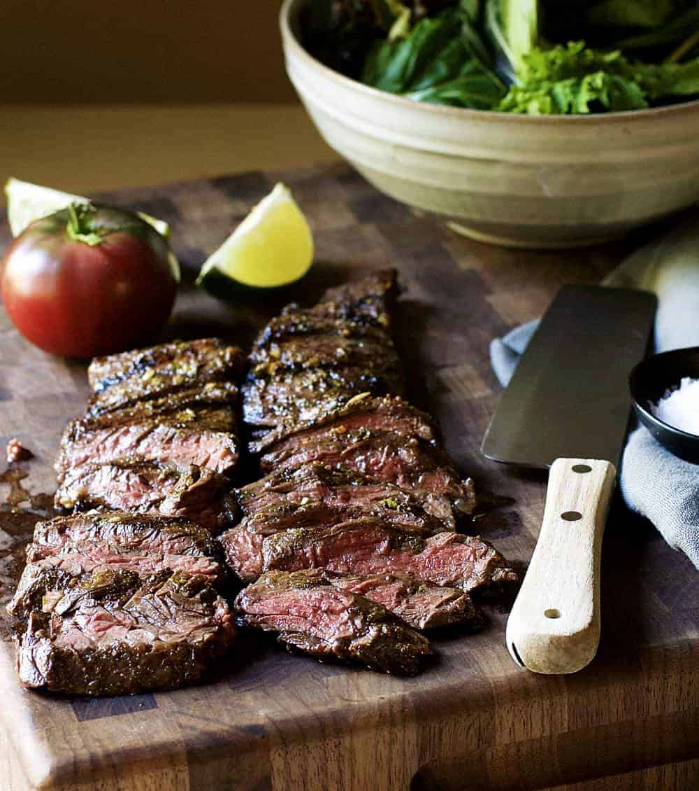

Home
Carne Asada

Description
A basic recipe for carne asada. It works because it does.
Ingredients
- 2 pounds skirt steak
- 1 jalapeno
- 4 cloves garlic
- 1/2 cup fresh cilantro
- juice of 1 orange
- juice of 1 lime
- juice of 1 lemon
- 2 tbsp apple cider vinegar
- 1/3 cup olive oil
- 1 tsp ground cumin
- 1 tsp kosher salt
- 1/4 tsp ground black pepper
Steps
- In a large glass baking dish whisk together marinade ingredients (jalapeno through black pepper) until combined. Add skirt steak in a single layer, turning to coat with marinade. Cover and refridgerate for at least 1 hour, but no longer than 8 hours.
- When ready to grill: preheat an outdoor grill to medium-high heat. Frill steaks for 7 to 10 minutes per side, turning once for medium-rare. Remove steaks and allow to rest for 5 minutes.
- Slice thinly across the grain and serve.